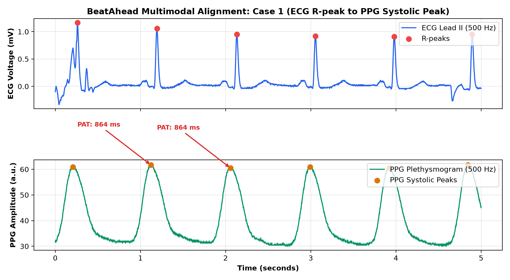
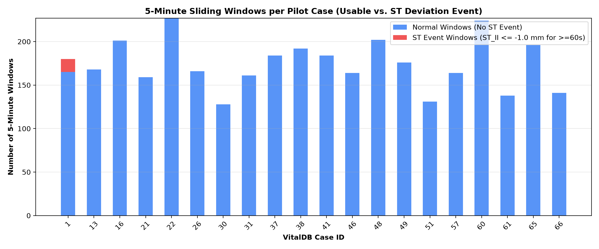
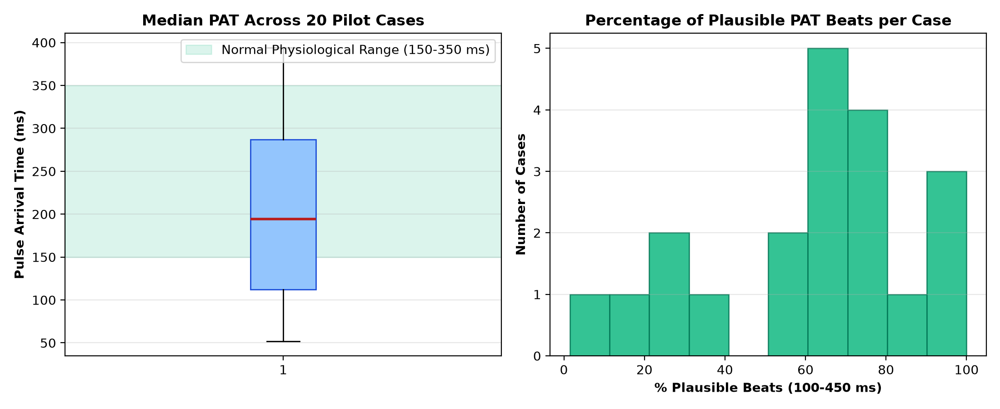

Document: reports/vitaldb_pilot_inspection.md
Target Dataset: VitalDB v1.0.1 (Pilot Cohort: 20 Cases)
Date: September 2026
Status: PILOT INSPECTION COMPLETED — STOPPED AWAITING HUMAN REVIEW
[!IMPORTANT] Clinical Rule Formulation & Evidence Base: In the public VitalDB release, the monitor track
Solar8000/ST_IIrecords the automated ST-segment deviation on Lead II measured in millimeters (mm) at standard diagnostic calibration ($1.0\text{ mm} = 0.1\text{ mV}$). In accordance with AHA/ACC Guidelines for Ambulatory Electrocardiography and the European Society of Cardiology (ESC) Myocardial Ischemia Detection Standards: 1. Sustained ST Ischemic Event Rule (Primary Target): A 5-minute analysis window is labeled as an ST Event (label = 1) if and only if: $$\text{ST_II} \le -1.0\text{ mm } (-0.1\text{ mV}) \quad \text{or} \quad \text{ST_II} \ge +1.0\text{ mm } (+0.1\text{ mV})$$ sustained for $\ge 60\text{ consecutive seconds}$ (or $\ge 20\%$ of the valid numeric observations in the window). 2. Transient ST Excursion Rule (Secondary Target): Any window where the minimum ST deviation reaches $\le -1.0\text{ mm}$ for at least $30\text{ seconds}$. 3. Baseline Normal Rule (label = 0): Stable ST segment within physiological limits ($-0.8\text{ mm} < \text{ST_II} < +0.8\text{ mm}$) throughout the entire window. 4. Indeterminate / Borderline Windows: Windows with mild depression between $-1.0\text{ mm}$ and $-0.8\text{ mm}$ are excluded from binary training to prevent label ambiguity.
To verify hardware synchronization between the electrical heart activation (ECG) and peripheral pulse arrival (PPG), Pulse Arrival Time (PAT) was computed across cardiac cycles:
SNUADC/ECG_II and SNUADC/PLETH in the .vital archive without inter-channel lag.| Case ID | Duration (hrs) | ECG NaN % | PLETH NaN % | SpO2 NaN % | Median PAT (ms) | ST_II Min (mm) | ST_II Mean (mm) | Usable Windows | Sustained ST Events | Transient ST Events |
|---|---|---|---|---|---|---|---|---|---|---|
| 1 | 3.21 | 0.016% | 0.016% | 4.4% | 79.0 | -1.9 | -0.51 | 180 | 15 | 31 |
| 13 | 3.00 | 0.007% | 0.007% | 3.5% | 323.0 | -2.2 | 0.04 | 168 | 0 | 3 |
| 16 | 3.57 | 0.025% | 0.025% | 3.3% | 394.0 | -0.5 | 0.16 | 201 | 0 | 0 |
| 21 | 3.53 | 0.001% | 0.001% | 6.0% | 170.0 | -0.3 | 0.0 | 159 | 0 | 0 |
| 22 | 3.99 | 0.014% | 0.014% | 2.0% | 213.0 | -0.8 | -0.06 | 227 | 0 | 0 |
| 26 | 2.98 | 0.024% | 0.024% | 3.8% | 122.0 | -0.2 | 0.26 | 166 | 0 | 0 |
| 30 | 3.09 | 0.017% | 0.017% | 7.2% | 235.0 | 0.0 | 0.35 | 128 | 0 | 0 |
| 31 | 2.89 | 0.009% | 0.009% | 3.9% | 306.0 | -0.5 | 0.1 | 161 | 0 | 0 |
| 37 | 3.28 | 0.015% | 0.015% | 3.4% | 82.0 | -0.4 | 0.49 | 184 | 0 | 0 |
| 38 | 3.41 | 0.012% | 0.012% | 1.8% | 72.0 | -1.0 | 0.23 | 192 | 0 | 5 |
| 41 | 3.29 | 0.017% | 0.017% | 4.4% | 60.0 | -0.4 | 0.07 | 184 | 0 | 0 |
| 46 | 2.95 | 0.047% | 0.047% | 5.5% | 52.0 | 0.0 | 0.46 | 164 | 0 | 0 |
| 48 | 3.58 | 0.020% | 0.020% | 3.7% | 208.0 | -0.8 | -0.02 | 202 | 0 | 0 |
| 49 | 3.47 | 0.005% | 0.005% | 2.1% | 296.0 | -0.8 | 0.22 | 176 | 0 | 0 |
| 51 | 2.41 | 0.052% | 0.052% | 6.2% | 138.0 | -0.1 | 0.2 | 131 | 0 | 0 |
| 57 | 2.95 | 0.015% | 0.015% | 3.8% | 296.0 | -0.5 | 0.05 | 164 | 0 | 0 |
| 60 | 3.97 | 0.010% | 0.010% | 2.7% | 136.0 | -0.8 | -0.02 | 224 | 0 | 0 |
| 61 | 2.58 | 0.017% | 0.017% | 7.0% | 284.0 | -3.6 | 0.15 | 138 | 0 | 2 |
| 65 | 3.57 | 0.031% | 0.031% | 4.4% | 218.0 | -0.8 | 0.47 | 196 | 0 | 0 |
| 66 | 2.57 | 0.001% | 0.001% | 4.0% | 181.0 | -0.4 | -0.02 | 141 | 0 | 0 |



SNUADC/ECG_II). Lead II is optimized for rhythm and inferior wall ischemia, but will be less sensitive to isolated anterior wall subendocardial ischemia.Solar8000/ST_II updates every 2 seconds (0.5 Hz). While sufficient for macro-trend labeling, automated high-frequency QRS-T morphological feature extraction on 500 Hz SNUADC/ECG_II will provide superior continuous resolution for ML feature engineering.[!NOTE] Execution Halted: In strict accordance with the sprint constraints, all processing is stopped. No model training, synthetic data generation, or full-cohort downloads will be executed until human review and approval.